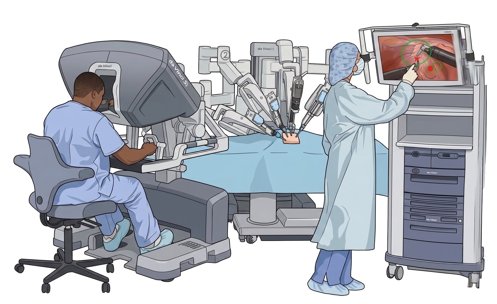
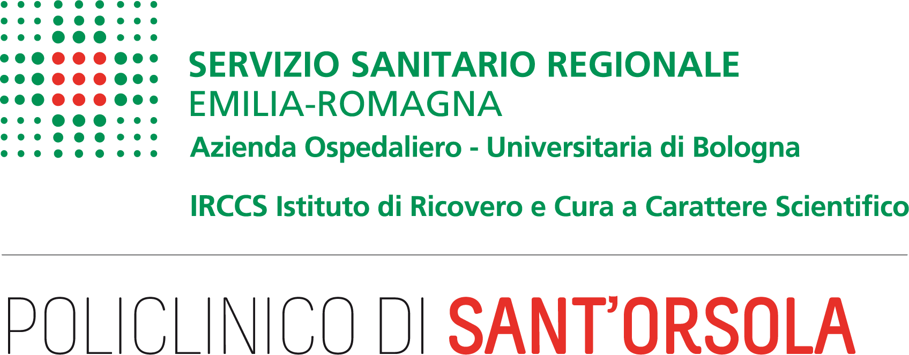

AI-based analysis of ICG fluorescence for sentinel lymph
node assessment in endometrial cancer surgery
A pilot study exploring how computer-vision and vision–language models can read intra-operative indocyanine green (ICG) fluorescence laparoscopy to support the surgeon's sentinel lymph node decisions.
In endometrial cancer, the treatment depends on whether the tumour has spread to the pelvic lymph nodes. The catch: during surgery, both finding the right node and reading whether it carries cancer are surprisingly hard.
To decide on therapy, surgeons need to know if cancer has spread to the pelvic lymph nodes. Removing them all (lymphadenectomy) is highly invasive, so the modern approach targets the sentinel lymph node (SLN): the first node along the lymphatic drainage from the tumour. If the sentinel is clean, the rest of the chain is very likely clean too. The surgeon marks it with a fluorescent dye, indocyanine green (ICG), that glows under a near-infrared camera, then removes the glowing tissue for pathology. The technique is the standard of care[1], but it still fails often — and that failure is what this project is about.
Endometrial cancer arises in the endometrium, the inner lining of the uterus. It is the most frequent gynaecological malignancy in Europe, with roughly 417,000 new cases and 97,000 deaths worldwide in 2020, and a rising incidence driven by ageing and obesity.[2] Its prognosis and treatment hinge on one question: has it reached the lymph nodes?[3]
A lymph node is a small, bean-shaped organ of the lymphatic system, a vessel network that collects fluid (lymph) from tissues and returns it to the blood. Nodes are filtering stations that host immune cells; everyone has hundreds, grouped in stations (neck, armpits, groin, pelvis…). Lymph drains in predictable directions — so if a tumour sheds cells, they travel along that same drainage path.
The sentinel lymph node is the first node (or few) along the drainage path from the tumour — the first place stray cancer cells would arrive. The clinical logic: if the sentinel is clean, the downstream nodes very likely are too, so it can be removed selectively instead of taking the whole chain. This spares patients the morbidity of a full lymphadenectomy.
The surgeon injects indocyanine green (ICG), a dye that lights up green under a near-infrared camera. It travels through the lymphatic vessels and accumulates in the sentinel node(s). Watching the laparoscopic video, the surgeon spots the glowing area, removes that piece of tissue — the “packet” — and sends it to pathology.
Each patient has two sides. Overall the node is found in ~95.6% of patients, but on both sides in only ~76.5%[1]; the technique fails on one side in about 23.5% of cases[4]. A common cause is the “empty node packet”: fluorescent tissue that, at histology, contains no lymph node at all[5]. There is also no consensus on timing. If both sides fail, the whole minimally-invasive procedure was in vain. This is exactly where AI could help.

Is there a lymph node in the removed tissue at all? The packet may be fluorescent yet contain no node — an “empty packet”. This is the presence of the container.
Does that node contain tumour cells? A node is a healthy organ; a metastasis is cancer that travelled through the lymph and colonised it. This is the content inside the container.
AI-SLN develops experimental models that read intra-operative ICG laparoscopy to support the surgeon's decisions, not to replace them. We frame three clinical questions and, for each, explore and compare several modelling approaches.
Recognise whether the fluorescent tissue in view actually contains a sentinel lymph node, or is an empty packet.
Anticipate the biopsy outcome — a node that is involved by cancer or free of disease — from the intra-operative image, without waiting for histology.
Estimate how many lymph nodes are contained in the fluorescent tissue before it is removed.
In every case the goal is decision support at the surgeon's side — a second read, never an autonomous decision.
Surgical AI has advanced through foundation models and public benchmarks (for example, MICCAI EndoVis challenges) — but almost always on white-light video and on tasks like phase or instrument recognition. To date there are no foundation models pre-trained on this image modality — gynaecological laparoscopy with combined white-light and near-infrared (ICG) channels — nor on the lymph-node-centric tasks we consider. Our specific setting has no ready-made precedent.
Some of our tasks are fully experimental: we test whether AI can pick up patterns that are not visible to the surgeon's eye — for instance signals hinting at metastatic involvement, or faint dye uptake below the threshold of human perception — and turn them into useful predictions. These are open scientific questions, not solved engineering.
We systematically explore what today's models can do in this data-scarce, privacy-bound setting, and how to push them further.
We experiment with the capabilities of open-source, state-of-the-art models — from visual encoders to multimodal large language models, both domain-specialised and general purpose — and combine them with training and data-augmentation techniques designed to extract signal from very few examples. Everything runs on local infrastructure, so patient data never leaves a controlled environment. Keeping the approach broad lets us compare paradigms fairly, and preserves the freedom to try new directions ahead of the full paper.
Model details are kept deliberately general here and will be fully described in the forthcoming paper.
The best results obtained so far, on held-out examples, in a data-scarce pilot setting.
The model pinpoints when the sentinel node first becomes visible in the clip in about two of three cases — a large jump over the untrained model — and is usually only seconds off.
The model tells metastatic from disease-free nodes well above chance — an encouraging early signal for a question a surgeon cannot answer by eye.
Asked how many nodes the fluorescent tissue holds, the model usually lands within one of the pathology count.
De-identified examples from our evaluation. For each one, test your own eye against the pathology ground truth — then reveal the model’s prediction.
A held-out clip of 80 frames. The task: find the moment the sentinel node first becomes visible. Scrub through — the model’s predicted frame lights up green, and here it matches the surgeon’s ground truth exactly.
Does this node carry cancer?
Metastasis is not visible to the naked eye — which is exactly why we test whether AI can help. Here the ground truth comes from pathology, and the model’s prediction matches it.
How many lymph nodes are in this tissue?
Counting the nodes packed inside the fluorescent tissue, before removal, is hard even for surgeons. Here the ground truth comes from pathology, and the model’s prediction matches it.
These results form a solid, reproducible experimental base and motivate large-scale data collection and the training of dedicated foundation models.
AI-SLN is a retrospective, observational, no-profit study of patients treated for endometrial cancer with hysterectomy and sentinel lymph node biopsy using ICG, across the participating hospital centres. The study was approved by the Ethics Committee and conducted under Good Clinical Practice. Because the material is intra-operative surgical video and clinical outcomes, the dataset cannot be publicly released for privacy reasons.
Natural Language Processing group, DISI, University of Bologna (Italy). Designs, trains and evaluates the AI models, and leads the methodological research.
disi-unibo-nlp.github.io →
Policlinico di Sant'Orsola, Gynaecology & Human Reproduction Physiopathology (Italy). Leads patient care, data collection, anonymisation and expert clinical annotation (ground truth).
aosp.bo.it →Have a question about the study, the clinical problem, or the methods behind it? We are glad to hear from you — reach the team directly by email.
disi.unibo.nlp@gmail.comThis project is supported by Fondazione CARISBO through the competitive call “Bando Ricerca scientifica e Alta tecnologia 2024” — an annual grant programme that funds scientific research and high-technology projects proposed by universities and research bodies in the Bologna area.